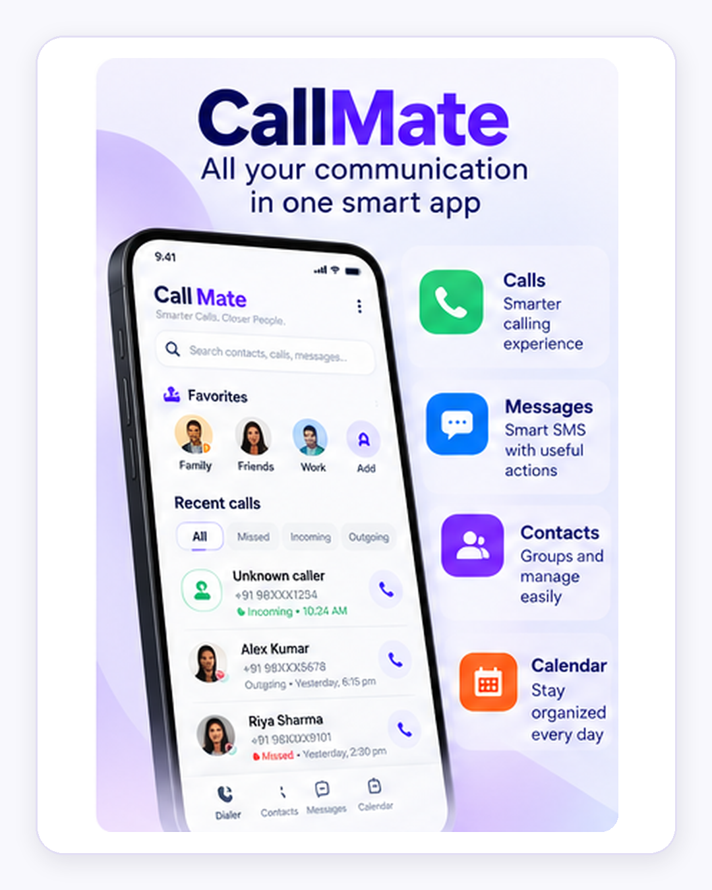

Technical Expertise
Building systems that perform at scale
Deep technical experience combined with pragmatic leadership across the complete engineering lifecycle.
Backend Engineering
Robust enterprise services designed for clarity, reliability, and long-term evolution.
System Architecture
Pragmatic architecture decisions balancing scale, resilience, and operational simplicity.
Cloud & DevOps
Cloud-native platforms and automated delivery practices built for dependable operations.
Data & Performance
Evidence-led diagnosis and tuning across applications, data stores, and caches.
AI & GenAI
Active, hands-on exploration of useful AI patterns grounded in reliable software systems.
Professional Experience
A career built on dependable delivery
Enterprise engineering experience across performance management, aviation, insurance, banking, education technology, and mobile products.
2022 — Present
Principal Consultant
Xebia
Leading backend architecture, performance engineering, enterprise integration, and technical delivery.
- Architecture guidance and engineering leadership
- Performance-focused enterprise delivery
- Stakeholder collaboration and team mentoring
2019 — 2022
Senior Engineer
IRIS Software
Built and supported large-scale market-risk systems while improving engineering automation and release coordination.
- Backend engineering for complex financial platforms
- Automation and dependable release coordination
2017 — 2019
Technical Consultant
GlobalLogic
Delivered distributed microservices and cloud engineering capabilities for education technology.
- Distributed service development and integration
- Cloud-oriented engineering practices
2013 — 2017
Software & Backend Engineering
Developed Java, AWS, and backend systems supporting mobile and education products.
- Java backend systems and API development
- AWS-based product engineering
Client and system details are intentionally summarized where work is confidential.
Featured Projects
Learning, building, and sharing
Independent work spanning mobile products, architecture, and practical AI exploration.

Android Application
SmartDialer
Intelligent Communication Management
An Android application bringing calls, messages, contacts, reminders, and calendar workflows into one organized experience.
View ProjectEngineering
Engineering Architecture
System Design & Technical Solutions
Practical explorations in distributed systems, API design, performance, resilience, and architecture trade-offs.
View ProjectActive Exploration
AI & GenAI Lab
Learning • Building • Exploring
Hands-on experiments with LLM applications, retrieval-augmented generation, agent workflows, and evaluation.
View Project